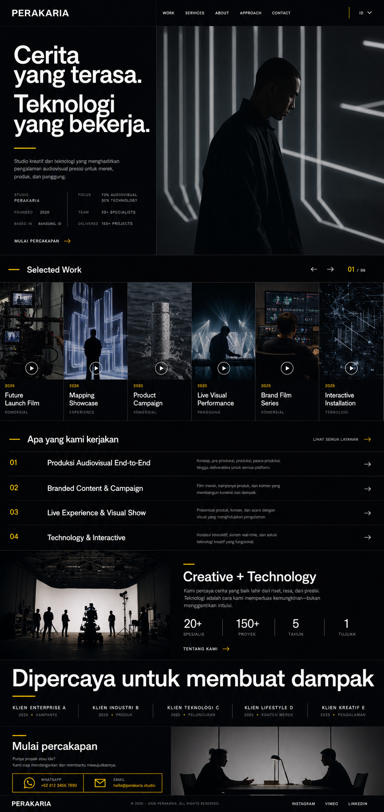
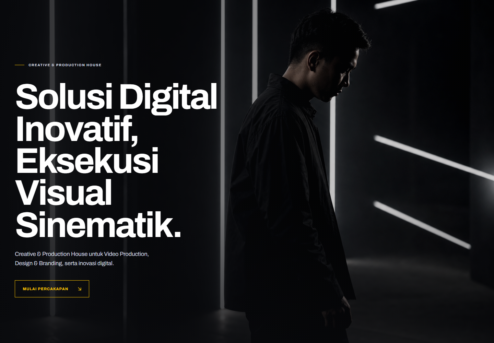

<!doctype html><meta charset="utf-8"><title>Perakaria QA comparison</title><style>*{box-sizing:border-box}body{margin:0;padding:16px;background:#1a1b20;color:#fff;font:700 13px Arial;display:grid;grid-template-columns:1fr 1fr;gap:16px}figure{margin:0}figcaption{height:36px;padding:10px;background:#090a0d;letter-spacing:.12em}.frame{aspect-ratio:1.44;overflow:hidden;background:#090a0d}.frame img{width:100%;height:100%;display:block;object-fit:cover;object-position:top}</style><figure><figcaption>SOURCE OPTION 3 — FIRST VIEW</figcaption><div class="frame"></div></figure><figure><figcaption>IMPLEMENTATION — 1440 × 1000</figcaption><div class="frame"></div></figure>